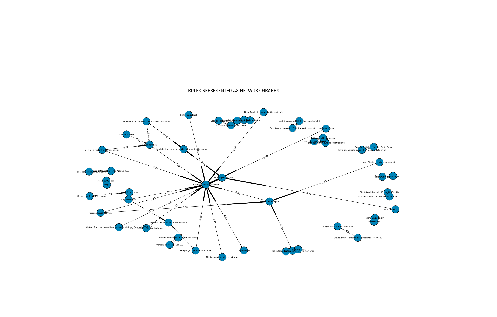

Top books by gender (ratio)
Some prejudices about gender seem to be true: Females loan more books about diets, while males like to read about stamps.
Top 25 female book loans
Top 25 male book loans
Ages of book readers
The difference between what people of different ages read is noticable in books such as Den Gode Opgave and Jesus, Pengene og Livet.
The former (a study book) is mostly read by younger audiences, while the latter (a biography) have a much older audience.
Also notice the very young readers (less than 5 years) loaning heavy books such as Zornig's biography depicting her awful childhood.
This could be interpreted as either bad data or people using their child's loaner card to be allowed to keep their book a bit longer.
Book loans during the year
Again, we see a clear trend in loans of the study book Den Gode Opgave, which seems to drop drastically during the summer vacation and grow again once the fall semester begins.
On the other hand, the diet book 5:2 Kuren has its peak at summertime.
Association rules
Using association mining, the loaner data was searched for association rules. Specifically, associations between book loans were mined using the Apriori algorithm.
The following graph networks shows which titles were connected. Firstly, the data was limited to non-fiction litterature, given the amount of meta-data available for these titles (genre was not availble for titles of fiction). Secondly, the loaner data was transformed into a list of loans for each individual loaner in Denmark (more than 1 mio. loaners).
This way, the data could be viewed as a list of transactions, were each loan would represent a transaction item. What was interesting in this case, was to explore related items. For example, if you like a book, which other books would you be likely to enjoy, based on the loaner data?
Then, the Apriori algorithm was used on loaner data from first 10.000 loaners and then 100.000 loaners. To be able to find the rules of interest for most people, the titles were limited to itemsets with at least 0.5% support (meaning that only titles that were loaned 0.5% or more of the times were considered to be of interest).
Furthermore, the rules were filtered by their confidence, meaning the probability that consequent would occur given the knowledge that the antecedent occuring. The confidence threshold were set at 30% for the 10k sample and 10% for the 100k sample (smaller samples will have more rules with high confidence due to samples biases).
The graph networks shows associations (represented as edges) between titles (represented as nodes) with confidence as edge labels.
Rules for 10k loaners
Rules for 100k loaners
Sorting association pairs by confidence
The rules can be sorted by confidence to explore the most strongly connected associations. The figure below clearly shows how this type of data mining can be used to create a recommendation system that could be implemented on library websites or used to place titles physically near each other.
The diagram should be read as: Having loaned the title on the left makes a person likely to loan the title on the right with a confidence shown between the two. For example, the rule with the highest confidence is 'Norge' -> 'Turen går til Norge' (0.714), meaning that 71,4% of the people that loaned the title 'Norge' also loaned 'Turen går til Norge'.
It is quite easy to validate that the algorithm functioned as intended by scanning through the top title associations.